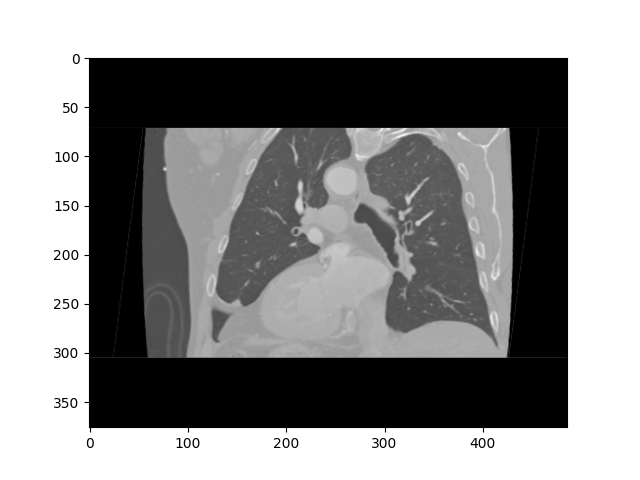

ФИО/шифр, возраст, ППТ
Диагноз: Дилатация восходящего отдела и аневризма брюшной аорты. Выраженная аортальная недостаточность

Descending Aorta

Isthmus

Arch after LSA

Arch after TBC

Ascending Aorta befor TBC

Ascending Aorta
Данные КТ:
- Descending Aorta: 29.2×28.7 мм (мин. 25.5 мм)
- Isthmus: 33.6×32.6 мм (мин. 26.9 мм)
- Arch after LSA: 29.7×29.4 мм (мин. 22.8 мм)
- Arch after TBC: 29.7×29.4 мм (мин. 25.2 мм)
- Ascending Aorta befor TBC: 39.4×38.7 мм (мин. 35.0 мм)
- Ascending Aorta: 39.3×38.6 мм (мин. 35.7 мм)
Данные ЭХОКГ:
Данные отсутствуют
Рекомендовано:
- Динамическое наблюдение кардиолога
- Контроль АД и ЧСС
- Исключить психо-эмоциональный и физический стресс
- Исключить приемы с пробой Вальсальвы
- Консультация кардиохирурга/сердечно-сосудистого хирурга
- Имплантация стент-графта с брюшную аорту в плановом порядке
- МСКТ-ангиография аорты через 1 год
- ЭХОКГ через 1 год
- Консультация кардиохирурга через 1 год